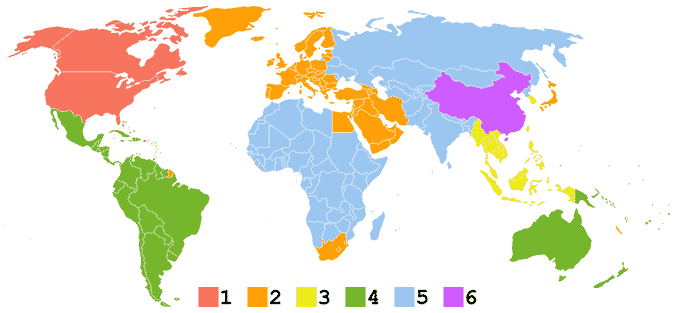
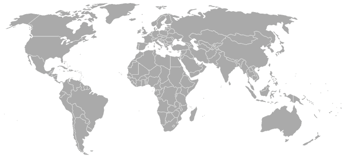

Codis de protecció regionals

Els discs de DVD o Blu-ray poden contenir un o més codis de regió o zones que indiquen en quines àrees del món es pot distribuir. Les especificacions de cada equip reproductor indiquen quina zona poden reproduir que coincideix en la zona en la qual s'ha venut. Els discs sense codi de regió són anomenats "totes les regions" o "regió 0", és a dir, contenen tots els codis de regió (1 , 2, 3, 4, 5 i 6) i significa que poden ser reproduïts en qualsevol aparell reproductor.
En teoria, això permet que els estudis cinematogràfics controlin diversos aspectes del llançament de DVD o Blu-ray, entre els quals s'inclouen el contingut o la data de llançament, però en realitat, el principal motiu és el preu final de venda segons la demanda i el poder adquisitiu de cada regió.
Regió 1
|
|
Estats Units, Canadà, Bermudes i territoris estatunidencs com Puerto Rico i les Illes Verges Americanes
Regió 2
|
|
Europa, Grenlàndia, l'oest d'Àsia, Egipte,Japó, Sud-àfrica, Lesotho, Swazilàndia, Dependències d'ultramar franceses<, Dependències d'ultramar britàniques i el Regne dels Països Baixos
Regió 3
|
|
Sud-est d'Àsia i Corea del Sud
Regió 4
|
|
Oceania (excepte Nova Caledònia), Amèrica Central (excepte Puerto Rico i les Illes Verges) i Amèrica del Sud (excepte la Guaiana Francesa)
Regió 5
|
|
Àfrica (excepte Egipte, Sud-àfrica, Lesotho i Swazilàndia), els països de la zona central d'Àsia incloent els de la
CEI,
Mongòlia i
Corea del Nord
Regió 6
|
|
Xina
Regió 0

Informal, no és una especificació oficial i pot ser reproduït en totes les regions.
Les combinacions més utilitzades actualment són les següents:
- 1/4, per distribuir en tot Amèrica (encara que falta la Guaiana Francesa)
- 2/5, per unir Europa i Àfrica
- 2/3/5/6, per distribuir en tota l'Àsia
- 3/4, per distribuir a tot Oceania.
Inicialment es van distribuir els DVDs amb el codi de regió 0 (codificat com a regió 1/2/3/4/5/6) perquè fossin compatibles en qualsevol aparell reproductor, però els estudis cinematogràfics van respondre ràpidament rebutjant aquesta opció mitjançant el sistema "Regional Coding Enhacement" (RCE).
Actualment hi ha molt reproductors "multi-regió" que aconsegueixen desbloquejar aquest codi i el RCE permetent a l'usuari escollir una regió en particular. Altres reproductors poden ser modificats per aquest propòsit o simplement ignoren la comprovació del codi.
Per algunes persones, això representa una violació dels acords comercials de l'Organització Mundial del Comerç, encara que de moment no s'han definit lleis al respecte.
Tornar a l'inici
|